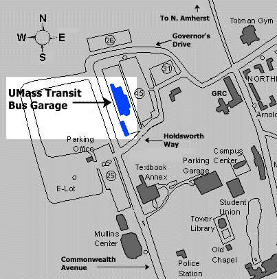

We're
located
in the northwest corner of UMass campus between computer science and parking services:
|  |
Directions from I-91:
From 91-North, Take exit 19 to route 9 (From 91-South, take exit 20 to route 5- & 10-South; take
your first left onto Damon Road; at the end of the road, take a left onto route 9), and head toward
Amherst and UMass. Proceed through 6 sets of traffic lights. At the seventh traffic light, take a
left onto 116 north. Get off at the UMass exit, and take a right at the end of the ramp onto
Massachusetts Avenue. Go through the blinking light, and make a left onto Commonwealth Avenue. Go
through one set of traffic lights, and take a right at the next set of lights onto Holdsworth Way.
Transit is located on the left, inside the chain-link fence.
|
Directions from Amherst Center:
Head toward UMass on North Pleasant Street. At the intersection of North Pleasant Street and Massachusetts
Avenue, go straight onto Massachusetts Ave. At the first set of lights, take a right onto Commonwealth Avenue.
Go through one set of traffic lights, and take a right at the next set of lights onto Holdsworth Way. Transit is
located on the left, inside the chain-link fence.
|
Directions from North Amherst Center:
Head toward UMass on North Pleasant Street. At the intersection of North Pleasant Street and Governor's Drive, take
a right onto Governor's Drive. At the next set of lights, take a left onto Holdsworth Way. Transit is located on the
left, inside the chain-link fence.
|